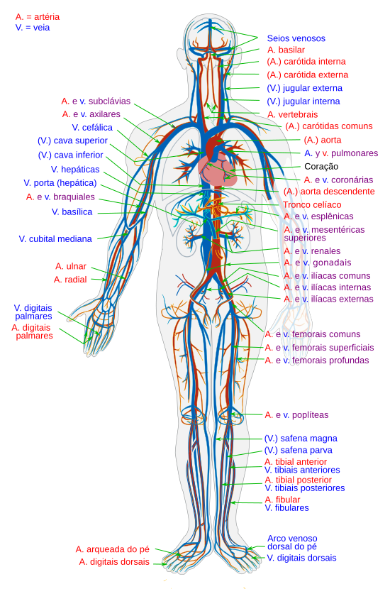
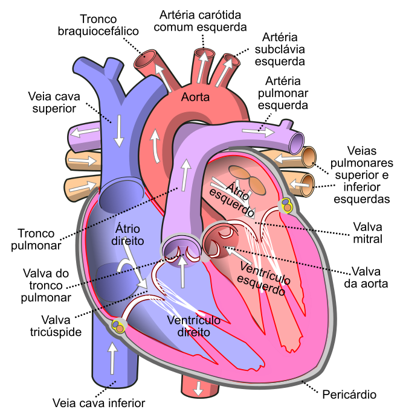

1 · Introdução
Como o oxigênio chega até uma célula do seu pé?
O oxigênio entra pelo sistema respiratório, mas precisa ser transportado até os tecidos. O sistema cardiovascular mantém o sangue em circulação e conecta os locais de absorção e troca às células do organismo.

Nesta aula, você vai seguir o sangue por dois circuitos ligados pelo coração: um passa pelos pulmões, o outro percorre o restante do corpo.
Conecte os sistemas
Respiratório
O oxigênio passa do ar dos alvéolos para o sangue.
Digestório
Nutrientes absorvidos no intestino entram no sangue.
Cardiovascular
O sangue leva os dois até as células do pé.
2 · Estruturas
Coração: câmaras, valvas e sentido do fluxo
O coração tem quatro câmaras: dois , que recebem o sangue, e dois , que o impulsionam para as artérias. se fecham para impedir o refluxo e manter um único sentido de fluxo.
{{ termName }}: {{ termDef }}

O lado direito recebe o sangue que volta dos tecidos e o envia aos pulmões. O lado esquerdo recebe o sangue que volta dos pulmões e o envia ao restante do corpo. Os dois lados se contraem juntos, mas o sangue de um não se mistura com o do outro.
Antes de seguir
Qual câmara impulsiona o sangue para a aorta?
Ventrículo esquerdo. Sua parede muscular é mais espessa porque impulsiona o sangue por todo o circuito sistêmico.
3 · Estruturas
Vasos sanguíneos: artérias, veias e capilares
O nome do vaso depende da direção do fluxo em relação ao coração. Artérias saem do coração, veias chegam a ele, e capilares ligam as duas redes nos tecidos.
Erro comum
“Artéria leva sangue oxigenado; veia leva sangue pobre em oxigênio.”
Isso vale na circulação sistêmica, mas não define os vasos. A artéria pulmonar leva sangue relativamente pobre em oxigênio, e as veias pulmonares trazem sangue rico em oxigênio. Nos diagramas, vermelho e azul são convenções: o sangue não fica azul nas veias.
4 · Funcionamento
Circulação pulmonar e sistêmica
O sangue percorre dois circuitos conectados pelo coração. Avance passo a passo ou reproduza a sequência no seu ritmo.
{{ flow.circ }}
{{ flow.cur.t }}
{{ flow.cur.d }}
P = circulação pulmonar · S = sistêmica · C = coração. As valvas aparecem no detalhe do coração, na seção 2.
Antes de seguir
Para onde vai o sangue que sai do ventrículo direito?
Para os pulmões, pelas artérias pulmonares. É o início da circulação pulmonar.
5 · Funcionamento
Trocas nos tecidos
Nos , a parede é formada por uma única camada de células. Essa espessura mínima favorece a passagem de substâncias entre o sangue e o que envolve as células.
{{ termName }}: {{ termDef }}
Do sangue para os tecidos
Oxigênio, glicose, aminoácidos e hormônios.
Dos tecidos para o sangue
Gás carbônico e outros resíduos do metabolismo.
Ponte conceitual · difusão: o oxigênio passa do local onde está mais concentrado (sangue) para onde está menos concentrado (células que o consomem na respiração celular).
Exemplo aplicado
Durante o exercício, aumenta a demanda de oxigênio e nutrientes pelos músculos, e respostas integradas ajustam ventilação e circulação.
6 · Integração
O sangue liga os locais de entrada, troca e saída
A circulação não trabalha sozinha. Ela recebe substâncias em alguns órgãos, entrega em outros e passa por órgãos que ajustam a composição do sangue.
{{ termName }}: {{ termDef }}
Terminou a leitura?
Marcar a aula como concluída registra a leitura. Seu desempenho aparece separadamente, nos flashcards e exercícios.